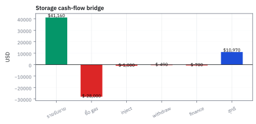
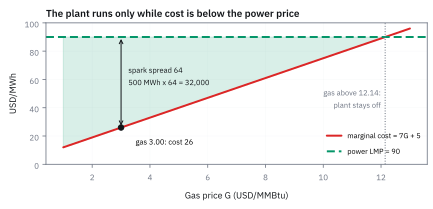
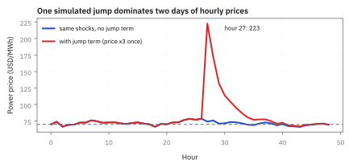
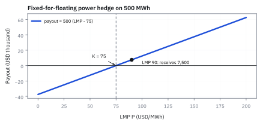
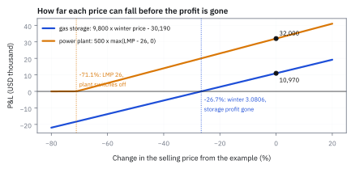

23.2 Commodity Derivatives: Gas and Power
ก๊าซเก็บได้แต่มีต้นทุน ไฟฟ้าเก็บแทบไม่ได้ ความต่างข้อเดียวนี้ทำให้คลังก๊าซเป็น option บนส่วนต่างตามเวลา และโรงไฟฟ้าเป็น option บนส่วนต่างระหว่างไฟกับก๊าซ
ในสหรัฐฯ คนใช้ก๊าซธรรมชาติทำความร้อนในบ้าน ก๊าซจึงถูกในหน้าร้อน และแพงในหน้าหนาว บริษัทพลังงานแห่งหนึ่งเช่าคลังเก็บก๊าซใต้ดินไว้ เพื่อทำดีลง่าย ๆ คือซื้อก๊าซหน้าร้อน อัดเก็บไว้ แล้วดึงออกมาขายหน้าหนาว
ตลาดก๊าซเปิดให้ตกลงราคาวันนี้สำหรับก๊าซที่จะส่งมอบในเดือนข้างหน้า ราคาที่ตกลงไว้นี้เรียกว่าราคาล่วงหน้า (forward price) คนซื้อและคนขายต่างรู้ราคาตั้งแต่วันนี้ แม้ของจะส่งมอบอีกหลายเดือน จอของเทรดเดอร์แสดงราคาล่วงหน้าที่ Henry Hub ซึ่งเป็นจุดส่งมอบก๊าซใน Louisiana ที่ทั้งประเทศใช้เป็นราคาอ้างอิง ราคาคิดต่อ MMBtu ซึ่งเป็นหน่วยพลังงานที่ใช้ซื้อขายก๊าซ
ของที่รู้ (ตัวเลขสมมติ):
- ราคาล่วงหน้าส่งมอบเดือนมิถุนายน (ราคาซื้อ) \$2.80 ต่อ MMBtu
- ราคาล่วงหน้าส่งมอบเดือนธันวาคม (ราคาขาย) \$4.20 ต่อ MMBtu
- คลังจุก๊าซได้ $Q=10{,}000$ MMBtu
ถ้ามองแค่ตัวเลขบนจอ ดีลนี้ได้ส่วนต่างราคาคูณปริมาณ
แต่การเก็บก๊าซมีต้นทุน (ตัวเลขสมมติ):
- ค่าอัดก๊าซเข้าคลัง \$0.10 ต่อ MMBtu
- ค่าดึงก๊าซออกจากคลัง \$0.05 ต่อ MMBtu
- ก๊าซหายไประหว่างเก็บ 2%
- เงินที่ใช้ซื้อก๊าซต้องกู้มา ดอกเบี้ย 5% ต่อปี กู้นานครึ่งปี จากมิถุนายนถึงธันวาคม
ดีลนี้ได้กำไรจริงเท่าไร และถ้ายังไม่ได้ตกลงราคาขายเดือนธันวาคมไว้ล่วงหน้า ราคาเดือนธันวาคมต่ำได้แค่ไหนก่อนจะขาดทุน?
ลองตอบก่อนเปิดเฉลย
กำไรจริงคือ \$10,970 ไม่ใช่ \$14,000 ขั้นที่ 1 จะแจกที่มาของต้นทุน \$30,190 ทีละก้อน ตอนนี้ดูภาพรวมก่อน ก๊าซหาย 2% จึงขายได้ไม่ครบ หาร \$30,190 ด้วยปริมาณที่ขายได้ก็ได้ราคาขายที่แค่คืนทุน
กำไรต่อหน่วยที่ขายจึงเหลือ \$1.12 ไม่ใช่ \$1.40 ตามจอ ถ้าไม่ตกลงราคาขายไว้ ราคาเดือนธันวาคมต้องไม่ต่ำกว่า \$3.0806 ซึ่งต่ำกว่า \$4.20 อยู่ $3.0806/4.20-1=-26.7\%$ ดีลที่ดีจึงต้องขายก๊าซเดือนธันวาคมล่วงหน้าตั้งแต่วันที่ซื้อ ถ้าไม่ขาย กำไรนี้ก็คือการเดาว่าราคาจะไม่ลงเกิน 26.7%
ภาพรวมก่อนลงสูตร
หุ้นถือไว้ในบัญชีได้ฟรี ไม่มีค่าเก็บ และไม่หายไปไหน ก๊าซไม่ใช่แบบนั้น ก๊าซต้องเช่าที่เก็บ ต้องเสียค่าอัดและค่าดึง และหายไปบางส่วนระหว่างเก็บ ไฟฟ้ายิ่งต่างออกไปอีก เพราะไฟฟ้าแทบเก็บไม่ได้เลย ไฟที่ผลิตชั่วโมงนี้ต้องถูกใช้ในชั่วโมงนี้
ความต่างนี้มีผลสองข้อ ข้อแรก ราคาล่วงหน้าของก๊าซและไฟไม่เดินตามสูตร cost of carry ที่ใช้กับหุ้น สูตรนั้นบอกว่าราคาล่วงหน้าเท่ากับราคาวันนี้บวกต้นทุนการถือของไว้จนถึงวันส่งมอบ ข้อสอง ของจริงสองอย่างกลายเป็น option โดยไม่ต้องเซ็นสัญญาอะไร option คือสิทธิ์ที่จะเลือกทำหรือไม่ทำก็ได้ เจ้าของจะทำเฉพาะเมื่อคุ้ม
- คลังก๊าซให้สิทธิ์ซื้อตอนก๊าซถูก แล้วขายตอนก๊าซแพง เป็น option บนส่วนต่างราคาระหว่างสองช่วงเวลา
- โรงไฟฟ้าก๊าซให้สิทธิ์เปลี่ยนก๊าซเป็นไฟ เจ้าของจะเดินเครื่องเมื่อขายไฟได้แพงกว่าค่าก๊าซที่ต้องเผา เป็น option บนส่วนต่างราคาระหว่างสินค้าสองชนิด
หน้านี้เดินตามลำดับนี้:
- ครึ่งแรกเป็นเรื่องก๊าซ เริ่มจากคิดดีลคลังให้ครบทุกต้นทุน แล้วหาเพดานของราคาล่วงหน้า ต่อด้วยการล็อกราคาด้วย swap และจบที่การมองคลังเป็น option ด้วยสมการเดินถอยหลังจากหน้า real options และ dynamic programming
- ครึ่งหลังเป็นเรื่องไฟฟ้า เริ่มจากโรงไฟฟ้าที่เป็น option บนส่วนต่างระหว่างราคาไฟกับค่าก๊าซ (spark spread) แล้วดูว่าค่าติดเครื่องผูกชั่วโมงต่าง ๆ เข้าด้วยกันอย่างไร ต่อด้วยการตีราคาสัญญาเช่าโรงไฟฟ้า (tolling)
- ช่วงท้ายดูว่าราคาก๊าซและไฟเคลื่อนที่อย่างไร ราคาถูกดึงกลับเข้าหาระดับปกติ และราคาไฟกระโดดได้ แล้วจบที่การ hedge ค่าไฟ คือการทำสัญญาเพื่อลดผลของราคาที่ขึ้นลง
รูปด้านล่างคือดีลคลังก๊าซในโจทย์เปิดหน้า วาดทั้งก้อน
รูป — ซื้อหน้าร้อน เก็บไว้ ขายหน้าหนาว
ศัพท์ที่ใช้ในหัวข้อนี้
- Henry Hub และ MMBtu
- Henry Hub คือจุดส่งมอบก๊าซใน Louisiana สัญญาซื้อขายก๊าซล่วงหน้าในสหรัฐฯ ใช้ราคาที่จุดนี้เป็นราคาอ้างอิง MMBtu คือหน่วยพลังงานที่ใช้ซื้อขายก๊าซ เท่ากับหนึ่งล้าน BTU (British thermal unit) หนึ่ง BTU คือความร้อนที่ทำให้น้ำหนึ่งปอนด์ร้อนขึ้นหนึ่งองศาฟาเรนไฮต์ หนึ่ง MMBtu จึงราว 1.055 GJ
- ราคาล่วงหน้า (forward และ futures)
- ราคาที่ตกลงวันนี้สำหรับของที่จะส่งมอบในวันข้างหน้า สัญญาแบบนี้เรียกว่า forward ถ้าตกลงกันเองนอกตลาด และเรียกว่า futures ถ้าซื้อขายในตลาดกลางที่มีเงื่อนไขมาตรฐาน หน้านี้ใช้คำว่าราคาล่วงหน้าสำหรับทั้งสองแบบ
- Forward curve
- ราคาล่วงหน้าของทุกเดือนข้างหน้า เรียงต่อกันเป็นเส้น เช่นเส้นน้ำเงินในรูปแรก ใช้ล็อกราคาซื้อขายในอนาคต มันไม่ใช่คำพยากรณ์ว่าราคาจะเป็นเท่าไร
- Option, call และ put
- option คือสิทธิ์ที่จะเลือกทำหรือไม่ทำก็ได้ call คือสิทธิ์ซื้อของในราคาที่ตกลงไว้ put คือสิทธิ์ขายของในราคาที่ตกลงไว้ ราคาที่ตกลงไว้นี้เรียกว่า strike ถ้าใช้สิทธิ์แล้วขาดทุน เจ้าของก็แค่ไม่ใช้สิทธิ์ เงินที่ได้จึงไม่ติดลบ
- Cost of carry และ convenience yield
- cost of carry คือต้นทุนของการถือของจริงไว้จนถึงวันส่งมอบ เช่น ดอกเบี้ยของเงินที่ใช้ซื้อ ค่าเก็บ และของที่หาย convenience yield คือประโยชน์ของการมีของอยู่ในมือ เช่น โรงงานไม่ต้องหยุดเดินเครื่องเพราะของขาด ประโยชน์นี้วัดตรง ๆ ไม่ได้ ต้องคำนวณย้อนจากราคาตลาด (ขั้นที่ 2)
- Backwardation และ contango
- backwardation คือช่วงที่ราคาล่วงหน้าของเดือนไกลต่ำกว่าเดือนใกล้ เส้นราคาลาดลง contango คือช่วงที่เดือนไกลแพงกว่าเดือนใกล้ เส้นราคาลาดขึ้น
- Swap (fixed-for-floating)
- สัญญาที่ฝั่งหนึ่งจ่ายราคาคงที่ และรับราคาตลาดของแต่ละงวดกลับมา ทำให้ต้นทุนหรือรายได้รู้ล่วงหน้า โดยไม่ต้องส่งของจริงให้กัน
- Hedge และ basis
- hedge คือการทำสัญญาที่ได้เงินเมื่อราคาเคลื่อนไปทางที่ทำให้เราเสีย เพื่อหักล้างกัน basis คือส่วนต่างระหว่างราคาที่เราซื้อขายจริงกับราคาอ้างอิงในสัญญา hedge ลบส่วนนี้ไม่ได้
- MW และ MWh
- MW (เมกะวัตต์) เป็นหน่วยของกำลัง คือพลังงานที่ผลิตได้ในหนึ่งหน่วยเวลา MWh (เมกะวัตต์ชั่วโมง) เป็นหน่วยของพลังงาน โรงไฟฟ้า 100 MW ที่เดิน 5 ชั่วโมงผลิตไฟได้ $100\times5=500$ MWh ราคาไฟคิดเป็นดอลลาร์ต่อ MWh
- Heat rate และ spark spread
- heat rate คือปริมาณก๊าซ (MMBtu) ที่โรงไฟฟ้าต้องเผาเพื่อผลิตไฟ 1 MWh ยิ่งต่ำยิ่งประหยัดก๊าซ spark spread คือราคาไฟลบค่าก๊าซที่ต้องเผา บอกว่าการเปลี่ยนก๊าซเป็นไฟชั่วโมงนั้นคุ้มแค่ไหน
- Tolling agreement
- สัญญาเช่าโรงไฟฟ้า ผู้เช่าจ่ายค่าเช่าคงที่ ส่งก๊าซให้โรงไฟฟ้า และได้สิทธิ์สั่งเดินหรือหยุดเครื่อง แล้วรับไฟที่ผลิตได้ไปขาย เจ้าของโรงไฟฟ้าได้ค่าเช่าแน่นอน ส่วนความเสี่ยงของราคาไฟและก๊าซตกอยู่กับผู้เช่า
- LMP (locational marginal price)
- ราคาไฟ ณ จุดหนึ่งของโครงข่ายในแต่ละช่วงเวลา ผู้ดูแลโครงข่ายอย่าง PJM (ซึ่งดูแลโครงข่ายไฟฟ้าทางตะวันออกของสหรัฐฯ) ประกาศราคานี้ทุกชั่วโมง สัญญาไฟฟ้าใช้ LMP เป็นราคาตลาดที่ลอยขึ้นลง
- Mean reversion และ jump
- mean reversion คือแรงที่ดึงราคากลับเข้าหาระดับปกติ เมื่อราคาออกห่างไป jump คือการที่ราคากระโดดทีละมาก ๆ ในชั่วขณะเดียว แทนที่จะค่อย ๆ ขยับ
สัญลักษณ์และหน่วย
| สัญลักษณ์ | ความหมาย | หน่วย |
|---|---|---|
| $Q$ | ปริมาณในดีลหรือในสัญญา | MMBtu หรือ MWh |
| $S,\ F_0(T)$ | ราคาซื้อขายส่งมอบทันทีวันนี้ และราคาล่วงหน้าที่ตกลงวันนี้สำหรับส่งมอบที่เวลา $T$ | \$ ต่อ MMBtu |
| $c_{\text{in}},\ c_{\text{out}},\ \ell$ | ค่าอัดเข้า ค่าดึงออก และสัดส่วนก๊าซที่หายระหว่างเก็บ | \$ ต่อ MMBtu, ไม่มีหน่วย |
| $r,\ u,\ y$ | ดอกเบี้ย ค่าเก็บ และ convenience yield ทั้งสามตัวเป็นอัตราต่อปี | ต่อปี |
| $D_i,\ \delta$ | ตัวคูณคิดลด คือค่าวันนี้ของเงิน \$1 ที่จะได้ในงวดที่ $i$ หรือในงวดถัดไป | ไม่มีหน่วย |
| $K$ | ราคาคงที่ใน swap (ขั้นที่ 3 และ 11) หรือค่าเช่าโรงไฟฟ้าต่อช่วง (ขั้นที่ 8) | \$ ต่อหน่วย หรือ \$ ต่อช่วง |
| $I,\ z,\ f$ | ก๊าซในคลัง ปริมาณที่ดึงออกในงวดนั้น (ติดลบคืออัดเข้า) และก๊าซที่เสียไปตอนดึง | MMBtu |
| $h,\ G,\ P,\ D$ | heat rate ราคาก๊าซ ราคาไฟ และ spark spread $P-hG$ | MMBtu ต่อ MWh, \$ ต่อ MMBtu, \$ ต่อ MWh, \$ ต่อ MWh |
| $c_{\text{var}},\ \pi,\ \Pi$ | ต้นทุนผันแปรอื่นของโรงไฟฟ้า กำไรต่อ MWh และกำไรรวมของหนึ่งช่วง | \$ ต่อ MWh, \$ ต่อ MWh, \$ |
| $C_u,\ C_d$ | ค่าติดเครื่อง และค่าปิดเครื่อง | \$ |
| $\kappa,\ \theta,\ \xi$ | ความเร็วที่ราคาถูกดึงกลับ ระดับที่ราคาถูกดึงเข้าหา และขนาดของการแกว่งสุ่ม | ต่อปี, \$ ต่อ MMBtu, \$ ต่อ MMBtu ต่อรากปี |
| $J,\ N_h$ | ขนาดของการกระโดดบนลอการิทึมของราคาไฟ และจำนวนครั้งที่กระโดดในชั่วโมงที่ $h$ | ไม่มีหน่วย, ครั้ง |
ขั้นที่ 1 — ดีลคลังก๊าซ: \$14,000 บนจอเหลือเท่าไร
ขั้นนี้คิดดีลในโจทย์เปิดหน้าให้ครบ เพราะตัวเลข \$14,000 บนจอยังไม่ได้หักอะไรเลย เราจะแยกต้นทุนออกเป็นก้อน แล้วหักทีละก้อน
โจทย์ให้อะไรมาบ้าง:
- ซื้อก๊าซ $Q=10{,}000$ MMBtu เดือนมิถุนายน ราคา \$2.80 ต่อ MMBtu
- ขายก๊าซที่เหลือเดือนธันวาคม ราคา \$4.20 ต่อ MMBtu
- ค่าอัด $c_{\text{in}}=\$0.10$ ต่อ MMBtu ที่อัดเข้า และค่าดึง $c_{\text{out}}=\$0.05$ ต่อ MMBtu ที่ดึงออก
- ก๊าซหายระหว่างเก็บ $\ell=2\%$
- ดอกเบี้ยเงินกู้ซื้อก๊าซ 5% ต่อปี แบบไม่ทบต้น กู้นานครึ่งปี
- สมมติว่าต้นทุนทุกก้อนจ่ายในวันขาย คือเดือนธันวาคม
เริ่มจากต้นทุน ซึ่งมีสี่ก้อน
ค่าก๊าซและค่าอัดคิดบน 10,000 หน่วยเต็ม เพราะเราซื้อและอัดก๊าซทั้งหมดเข้าไปก่อน แล้วจึงหายระหว่างเก็บ ค่าดึงคิดแค่บน 9,800 หน่วย เพราะก๊าซที่หายไปแล้วไม่ต้องดึง ดอกเบี้ยคิดบนเงิน \$28,000 ที่กู้มาซื้อก๊าซ ส่วนค่าอัดและค่าดึงไม่มีดอกเบี้ย เพราะเราสมมติว่าจ่ายในวันขาย
ก๊าซที่หายไป 200 หน่วยเสียเงินสองทาง ทางแรก เราจ่ายค่าซื้อและค่าอัดของมันไปแล้ว ทางที่สอง เราขายมันไม่ได้
ต่อไปคือรายรับ กำไร และราคาขายที่แค่คืนทุน ราคาคืนทุนหาได้จากการหารต้นทุนทั้งหมดด้วยปริมาณที่ขายได้จริง ถ้าราคาธันวาคมเท่ากับตัวเลขนี้ รายรับจะเท่ากับต้นทุนพอดี
$S^{\text{be}}_{\text{Dec}}$ คือราคาคืนทุนของเดือนธันวาคม (be ย่อมาจาก break-even) บรรทัดท้ายบอกว่าราคาธันวาคมตกจาก \$4.20 ได้ 26.7% ก่อนกำไรจะหมด ถ้ายังไม่ได้ตกลงราคาขายไว้ล่วงหน้า กำไรนี้จึงไม่ใช่ของแน่
อีกเรื่องที่คนมักพลาดคือเงินแต่ละก้อนจ่ายวันไหน สมมติว่าค่าอัด \$1,000 ต้องจ่ายตอนอัดในเดือนมิถุนายน ไม่ใช่ตอนขาย เงินก้อนนี้ก็ต้องกู้มาครึ่งปีเหมือนค่าก๊าซ กำไรจึงลดลงอีก $1{,}000(0.05)(0.5)=\$25$ เหลือ $10{,}970-25=\$10{,}945$ นอกจากนี้ กำไรนี้เป็นเงินที่ได้ในเดือนธันวาคม ถ้าจะเทียบกับดีลอื่นที่จ่ายเงินวันนี้ ต้องคิดลดกลับมาอีกครึ่งปี
คำตอบ: กำไรคือ \$10,970 คิดต่อหน่วยที่ขายได้ $10{,}970/9{,}800=\$1.12$ ไม่ใช่ \$1.40 ตามจอ
ตรวจเองใน 10 วินาที: เริ่มจาก \$14,000 บนจอ แล้วหักสี่อย่างที่จอไม่ได้นับ คือรายรับของก๊าซ 200 หน่วยที่หายไป ค่าอัด ค่าดึง และดอกเบี้ย ต้องได้กำไรเท่ากับที่คิดจากรายรับลบต้นทุน
รูป — จากรายรับหน้าหนาวถึงกำไรสุทธิ

รูปนี้เริ่มจากรายรับ แล้วหักต้นทุนทีละก้อนจนเหลือกำไร ตัวเลขทุกตัวมาจากขั้นที่ 1 แท่งเขียวคือรายรับ \$41,160 แท่งแดงสี่แท่งคือต้นทุน ได้แก่ ค่าซื้อก๊าซ (ป้าย ซื้อ gas) \$28,000 ค่าอัด (inject) \$1,000 ค่าดึง (withdraw) \$490 และดอกเบี้ย (finance) \$700 แท่งน้ำเงินท้ายสุด (สุทธิ) คือกำไร $41{,}160-30{,}190=\$10{,}970$ ถ้าลืมแท่งแดงแท่งใดแท่งหนึ่ง กำไรบนกระดาษจะสูงเกินจริงทันที
ขั้นที่ 2 — cash-and-carry: ทำไมราคาล่วงหน้าของก๊าซมีแต่เพดาน
ราคาธันวาคมบนจอคือ \$4.20 แต่ราคาคืนทุนคือ \$3.0806 ห่างกันมาก ถ้าใครก็ทำดีลคลังนี้ได้ ทำไมไม่มีคนแห่มาทำจนราคาธันวาคมลดลง ขั้นนี้ตอบคำถามนั้น และได้ข้อสรุปว่าราคาล่วงหน้าของก๊าซมีแค่เพดาน
หน้า cost of carry และ cash-and-carry หาราคาล่วงหน้าของหุ้นด้วยดีลสองแบบ ทั้งสองแบบไม่ต้องใช้เงินตัวเองเลย
- แบบแรก (cash-and-carry) กู้เงินมาซื้อของวันนี้ เก็บไว้ แล้วตกลงขายล่วงหน้า ถ้าราคาล่วงหน้าสูงเกินต้นทุนการถือ ดีลนี้ได้กำไรแน่นอน
- แบบที่สอง ยืมของมาขายวันนี้ เอาเงินไปฝาก แล้วตกลงซื้อคืนล่วงหน้า ถ้าราคาล่วงหน้าต่ำเกินไป ดีลนี้ได้กำไรแน่นอน
ดีลที่ได้กำไรแน่นอนโดยไม่ใช้เงินตัวเองเรียกว่า arbitrage ถ้ามีช่องแบบนี้ คนจะแห่มาทำจนช่องปิด ดีลแบบแรกจึงกดราคาล่วงหน้าลงมาจากข้างบน ดีลแบบที่สองดันขึ้นมาจากข้างล่าง ราคาล่วงหน้าของหุ้นจึงเหลือค่าเดียว
กับก๊าซทำได้แค่แบบแรก เพราะแบบที่สองต้องยืมก๊าซมาขายวันนี้ และไม่มีใครให้ยืมก๊าซจากคลังใต้ดิน ราคาล่วงหน้าของก๊าซจึงมีเพดาน แต่ไม่มีพื้น ลองเขียนดีลแบบแรกด้วยตัวเลขของขั้นที่ 1 ให้ $C_{\text{carry}}$ คือต้นทุนการถือทั้งหมดที่ต้องจ่ายในวันส่งมอบ
$V_0$ คือเงินสดวันนี้ ในที่นี้ $S=\$2.80$ คือราคาก๊าซที่ซื้อเดือนมิถุนายน เราจ่ายค่าก๊าซ $QS=10{,}000(2.80)=\$28{,}000$ ด้วยเงินที่กู้มาเท่ากัน จึงไม่ใช้เงินตัวเองเลย $V_T$ คือเงินสดในวันส่งมอบ เราส่งก๊าซที่เหลือ $Q(1-\ell)$ ให้คู่สัญญาที่ราคาล่วงหน้า $F_0(T)$ แล้วจ่ายต้นทุนทั้งหมด $C_{\text{carry}}=\$30{,}190$ (ค่าก๊าซ ค่าอัด ค่าดึง และดอกเบี้ย)
ทำไม $V_T$ ต้องไม่เกินศูนย์ ทุกตัวเลขใน $V_T$ รู้ตั้งแต่วันนี้ ถ้า $V_T$ เป็นบวก ดีลนี้คือเงินฟรีที่ไม่ต้องลงทุนและไม่มีความเสี่ยง ถ้าใครก็เช่าคลังได้ไม่จำกัด ทุกคนจะแห่มาขายก๊าซธันวาคมล่วงหน้า จนราคาธันวาคมลดลงเหลือไม่เกิน \$3.0806
แต่จอแสดง \$4.20 เกินเพดานไปมาก เพราะในความจริงคลังมีจำกัด และการสร้างคลังใหม่ใช้เวลาหลายปี คนที่ไม่มีคลังทำดีลนี้ไม่ได้ กำไร \$10,970 จึงเป็นสิ่งที่คลังขนาด 10,000 MMBtu ทำเงินได้ในรอบนี้ นี่คือค่าเช่าคลังสูงสุดที่ผู้เช่ายอมจ่าย ถ้าผู้ให้เช่าคิดแพงกว่านี้ ดีลก็ไม่คุ้ม
ตลาดมักเขียนช่องว่างระหว่างราคาวันนี้กับราคาล่วงหน้าเป็นอัตราต่อปี แบบเดียวกับดอกเบี้ย สูตรด้านล่างเป็นนิยาม ไม่ได้พิสูจน์ ในสูตรนี้ $r$ คือดอกเบี้ย และ $u$ คือค่าเก็บ ทั้งสองตัวดันราคาล่วงหน้าให้สูงขึ้น ส่วน $y$ คือ convenience yield ซึ่งกดราคาล่วงหน้าลง เพราะคนที่ได้ก๊าซงวดหน้าพลาดประโยชน์ของการมีก๊าซในมือระหว่างรอ จึงยอมจ่ายน้อยลง ค่า $y$ คือตัวที่ทำให้สูตรตรงกับราคาตลาดพอดี
ลองใช้ช่วงต้นปีของเส้นราคาในรูปแรก สมมติวันนี้เป็นเดือนมกราคม ราคาก๊าซส่งมอบทันทีคือ $S=\$4.30$ ราคาล่วงหน้าส่งมอบเดือนเมษายนคือ $F_0(T)=\$3.00$ และเมษายนห่างไปหนึ่งไตรมาส $T=0.25$ ปี ใส่ลอการิทึมทั้งสองข้างแล้วแก้หา $y$
convenience yield สูงกว่าดอกเบี้ยบวกค่าเก็บถึง 1.44 คือ 144% ต่อปี ตัวเลขใหญ่ขนาดนี้บอกว่าในหน้าหนาว ก๊าซในมือมีค่ามาก ทุกคนอยากใช้ก๊าซตอนนี้ ไม่มีใครอยากเก็บก๊าซไว้ขายเมษายนในราคาที่ต่ำกว่า ช่วงที่เส้นราคาลาดลงแบบนี้เรียกว่า backwardation ส่วนช่วงมิถุนายนถึงธันวาคมที่เส้นราคาลาดขึ้นเรียกว่า contango ดีลคลังในขั้นที่ 1 ทำเงินจากช่วง contango นี้เอง
ขั้นที่ 3 — ล็อกราคาด้วย swap: ราคาคงที่คือค่าเฉลี่ยถ่วงของราคาล่วงหน้า
ขั้นที่ 1 บอกว่าดีลคลังต้องล็อกราคาขาย คนที่ใช้ก๊าซก็มีปัญหาแบบเดียวกันในทางกลับกัน เช่น โรงงานที่ซื้อก๊าซทุกเดือนอยากรู้ค่าก๊าซของหลายเดือนข้างหน้าตั้งแต่วันนี้ เครื่องมือมาตรฐานคือ swap ในแต่ละเดือน โรงงานยังซื้อก๊าซจริงที่ราคาตลาดเหมือนเดิม แต่ทำสัญญาอีกฉบับกับคู่สัญญา ให้โรงงานจ่ายราคาคงที่ $K$ และรับราคาตลาดของเดือนนั้นกลับมา ราคาตลาดที่รับกลับมาหักล้างกับราคาตลาดที่จ่ายค่าก๊าซจริง โรงงานจึงจ่ายสุทธิ $K$ ทุกเดือน
คำถามคือ $K$ ควรเป็นเท่าไร ราคาที่ยุติธรรมคือราคาที่ทำให้สัญญามีค่าเป็นศูนย์ในวันที่เซ็น ไม่มีฝั่งไหนได้เปรียบ ของที่รู้ (ตัวเลขสมมติ):
- ปริมาณเท่ากันทุกเดือน เดือนละ $Q$ MMBtu
- ราคาล่วงหน้าของสามเดือนท้ายในรูปแรก คือตุลาคม \$3.00 พฤศจิกายน \$3.60 และธันวาคม \$4.20
- ตัวคูณคิดลด $D_i$ ของสามเดือนนั้นคือ 0.995, 0.990 และ 0.985 แปลว่าเงิน \$1 ที่จะได้ในเดือนตุลาคมมีค่าวันนี้ \$0.995 เพราะเงินวันนี้เอาไปฝากกินดอกเบี้ยได้
ในเดือนที่ $i$ ฝั่งที่จ่ายคงที่ได้เงินสุทธิ $Q\,(G_i-K)$ เมื่อ $G_i$ คือราคาตลาดของก๊าซในเดือนนั้น ซึ่งวันนี้ยังไม่รู้ เราแทน $G_i$ ด้วยราคาล่วงหน้า $F_0(T_i)$ แล้วคิดลดกลับมาวันนี้ด้วย $D_i$ จากนั้นรวมทุกเดือนแล้วตั้งให้เท่ากับศูนย์
จังหวะสำคัญคือการแทนราคาตลาดในอนาคต $G_i$ ด้วยราคาล่วงหน้าที่รู้วันนี้ $F_0(T_i)$ ทำไมทำได้ เพราะใครก็ทำสัญญาล่วงหน้าได้วันนี้โดยไม่เสียเงิน สัญญานั้นเปลี่ยนการรับราคาตลาดในเดือน $i$ ให้เป็นการรับ $F_0(T_i)$ ที่รู้แน่ ทั้งสองแบบจึงมีค่าวันนี้เท่ากัน
ปริมาณ $Q$ เท่ากันทุกเดือน จึงตัดออกจากทั้งสองข้าง ราคาคงที่ $K^*$ จึงเป็นค่าเฉลี่ยของราคาล่วงหน้า ที่ถ่วงด้วยตัวคูณคิดลด สูตรนี้เป็นสูตรเดียวกับอัตรา swap ดอกเบี้ย
แทนตัวเลขของสามเดือน
ค่าเฉลี่ยธรรมดาของสามเดือนคือ $(3.00+3.60+4.20)/3=3.60$ ราคาคงที่ \$3.5980 ต่ำกว่านี้เล็กน้อย เพราะเดือนที่ราคาสูงอยู่ไกลที่สุด จึงถูกคิดลดมากที่สุด และได้น้ำหนักน้อยที่สุด swap ไม่ได้ทำให้ก๊าซถูกลง มันแค่ทำให้รู้ค่าก๊าซล่วงหน้า
ขั้นที่ 4 — คลังคือ option: สมการเดินถอยหลังที่มีสองสถานะ
ขั้นที่ 1 ตัดสินใจทุกอย่างตั้งแต่วันแรก คือซื้อมิถุนายนและขายธันวาคม แต่เจ้าของคลังไม่จำเป็นต้องทำแบบนั้น ในแต่ละงวด เขาเลือกได้ว่าจะอัดก๊าซเข้า ดึงก๊าซออกไปขาย หรืออยู่เฉย ๆ และเลือกหลังจากเห็นราคาของงวดนั้นแล้ว สิทธิ์เลือกแบบนี้คือ option แบบเดียวกับใบอนุญาตสร้างโรงไฟฟ้าในหน้า real options และ dynamic programming
ความต่างมีข้อเดียว ค่าของใบอนุญาตขึ้นกับราคาอย่างเดียว แต่ค่าของคลังขึ้นกับสองอย่าง คือราคาก๊าซ $G$ และก๊าซที่อยู่ในคลัง $I$ เพราะก๊าซที่ดึงออกวันนี้ พรุ่งนี้ก็ไม่มีให้ดึงแล้ว สองอย่างนี้เรียกว่าสถานะของคลัง
ให้ $V_t(I,G)$ คือค่าของคลังที่งวด $t$ เมื่อในคลังมีก๊าซ $I$ และราคาก๊าซคือ $G$ เราหาค่านี้ด้วยการเดินถอยหลังจากงวดสุดท้าย $T$ ซึ่งสัญญาเช่าคลังหมดลง ก๊าซที่ยังค้างอยู่ตอนนั้นไม่มีค่า ค่าที่งวดสุดท้ายจึงเป็นศูนย์ ส่วนงวดก่อนหน้า เจ้าของเลือกปริมาณที่ดึงออก $z$ ที่ให้ค่ารวมสูงสุด
$z$ คือปริมาณที่ดึงออกในงวดนี้ ถ้า $z$ ติดลบแปลว่าอัดเข้า ก้อนแรก $G\,(z-f)$ คือเงินจากการขายหรือซื้อก๊าซงวดนี้ $f(z,I)$ คือก๊าซที่เสียไปตอนดึง ส่วนใหญ่ถูกเผาเป็นเชื้อเพลิงให้ปั๊ม และขึ้นกับว่าคลังมีก๊าซเหลือเท่าไร $c\lvert z\rvert$ คือค่าอัดหรือค่าดึง คิดต่อหน่วย
ก้อนหลังคือค่าของคลังในงวดหน้า ซึ่งเหลือก๊าซ $I-z$ คิดลดกลับมาด้วยตัวคูณคิดลดหนึ่งงวด $\delta$ ค่าเฉลี่ย $\mathbb E_q$ ใช้น้ำหนักตั้งราคา ไม่ใช่โอกาสจริง น้ำหนักตั้งราคาคือน้ำหนักที่ทำให้ค่าเฉลี่ยของราคางวดหน้าเท่ากับราคาล่วงหน้าที่ตลาดให้วันนี้ แบบเดียวกับในต้นไม้ binomial
บรรทัดสุดท้ายคือข้อจำกัด ก๊าซในคลังต้องไม่ติดลบและไม่เกินความจุ $C$ และแต่ละงวดอัดได้ไม่เกิน $a$ ดึงได้ไม่เกิน $b$ ตามกำลังของท่อและปั๊ม ข้อจำกัดนี้เองที่ผูกการตัดสินใจวันนี้กับวันหน้า ถ้าไม่มีข้อจำกัด แต่ละงวดก็ตัดสินใจแยกกันได้
ลองกับคลังที่เล็กที่สุด คลังจุก๊าซหนึ่งหน่วย และตอนนี้ว่างอยู่ ของที่รู้ (ตัวเลขสมมติ):
- ราคาก๊าซวันนี้ \$3.00
- งวดหน้าราคาเป็น \$4.50 หรือ \$2.50 น้ำหนักตั้งราคา 0.5 เท่ากัน และงวดหน้าเป็นงวดสุดท้ายก่อนสัญญาเช่าหมด
- ค่าอัดหรือค่าดึง $c=\$0.10$ ต่อหน่วย และไม่คิดก๊าซที่เสียตอนดึง ($f=0$)
- ตัวคูณคิดลดหนึ่งงวด $\delta=0.95$
เริ่มที่งวดหน้า คลังเต็มหนึ่งหน่วย และเป็นงวดสุดท้าย ก๊าซที่ไม่ดึงออกจะไม่มีค่า จึงดึงขายทั้งสองกิ่ง ได้ราคาลบค่าดึง วันนี้มีสองทางเลือก ทางแรกอยู่เฉย ๆ ได้ 0 ทางที่สองซื้อและอัดหนึ่งหน่วย จ่าย $3.00+0.10=3.10$ แล้วได้ค่าของคลังเต็มในงวดหน้า คิดลดกลับมาเป็น $0.95(3.40)=3.23$ ทางที่สองดีกว่า ค่าของคลังวันนี้จึงเป็น \$0.13
ลองเทียบกับการล็อกราคาตั้งแต่วันนี้ ราคาล่วงหน้าของงวดหน้าคือค่าเฉลี่ยใต้น้ำหนักตั้งราคา $0.5(4.50)+0.5(2.50)=3.50$ ถ้าซื้อวันนี้แล้วขายล่วงหน้าที่ \$3.50 ได้ $0.95(3.50-0.10)-3.10=0.13$ เท่ากันพอดี ทำไมสิทธิ์เลือกไม่เพิ่มค่าเลย เพราะทั้งสองกิ่งคุ้มที่จะดึงขายอยู่แล้ว ไม่มีกิ่งไหนที่เราอยากใช้สิทธิ์ไม่ขาย สิทธิ์เลือกจะเพิ่มค่าก็ต่อเมื่อมีกิ่งที่ถ้าถูกบังคับทำแล้วขาดทุน โรงไฟฟ้าในขั้นที่ 6 จะแสดงกรณีนั้นให้เห็น
คลังจริงไม่ได้มีแค่สองระดับ (ว่างกับเต็ม) แต่มีระดับก๊าซในคลังหลายร้อยระดับ ทุกจุดของต้นไม้ราคา (เรียกว่า node) จึงต้องเก็บค่า $V$ ของทุกระดับ งานคำนวณจึงโตเป็นจำนวน node คูณจำนวนระดับ ทางออกที่ใช้กันมีสองทาง ทางแรกประมาณ $V$ ด้วยฟังก์ชันง่าย ๆ ของตัวแปรไม่กี่ตัว (approximate dynamic programming) ทางที่สองสุ่มเส้นทางราคาจำนวนมากด้วยคอมพิวเตอร์ (simulation) แล้วหากฎอัดดึงที่ดีที่สุดจากเส้นทางเหล่านั้น
รูป — คลังหนึ่งหน่วย: อัดวันนี้ ดึงขายงวดหน้า
ขั้นที่ 5 — โรงไฟฟ้า: heat rate และ spark spread
ข้ามมาฝั่งไฟฟ้า โรงไฟฟ้าก๊าซเผาก๊าซเพื่อผลิตไฟ แล้วขายไฟเข้าโครงข่าย ในแต่ละชั่วโมง เจ้าของถามคำถามเดียว ขายไฟได้เงินมากกว่าค่าก๊าซที่ต้องเผาหรือเปล่า ถ้าใช่ก็เดินเครื่อง ถ้าไม่ใช่ก็ปิดเครื่องไว้ ขั้นนี้คิดกำไรของหนึ่งช่วงเวลาที่ราคาไฟสูง ของที่รู้ (ตัวเลขสมมติ):
- โรงไฟฟ้าขนาด 100 MW เดิน 5 ชั่วโมงในช่วงราคาสูง
- heat rate $h=7$ MMBtu ต่อ MWh คือผลิตไฟ 1 MWh ต้องเผาก๊าซ 7 MMBtu
- ราคาก๊าซ $G=\$3.00$ ต่อ MMBtu
- ต้นทุนผันแปรอื่น เช่น ค่าซ่อมบำรุงตามชั่วโมงเดินเครื่อง $c_{\text{var}}=\$5$ ต่อ MWh
- ราคาไฟ $P=\$90$ ต่อ MWh
ค่าก๊าซต่อ MWh คือก๊าซที่เผาคูณราคาก๊าซ $hG$ ส่วนต่างระหว่างราคาไฟกับค่าก๊าซนี้เรียกว่า spark spread เขียนว่า $D$ สมการด้านล่างหา spark spread ต้นทุนรวมต่อ MWh กำไรต่อ MWh และกำไรรวมของช่วงนี้
$\pi$ คือกำไรต่อ MWh และ $\Pi$ คือกำไรรวมของช่วงนี้ ต้นทุนรวม \$26 ต่อ MWh จะใช้ต่อในขั้นถัด ๆ ไป ตัว max คือสิทธิ์ที่จะไม่เดินเครื่อง ถ้า $D-c_{\text{var}}$ ติดลบ เจ้าของก็ปิดเครื่อง กำไรเป็นศูนย์ ไม่ติดลบ รูปนี้เหมือนเงินที่ได้จาก call ทุกประการ call จ่ายราคาของลบ strike เมื่อผลต่างเป็นบวก และจ่ายศูนย์เมื่อผลต่างติดลบ โรงไฟฟ้าจึงเป็น call บน spark spread โดยมีต้นทุนผันแปรอื่น $c_{\text{var}}$ เป็น strike
ระวังหน่วย MW เป็นหน่วยของกำลัง ต้องคูณจำนวนชั่วโมงจึงได้พลังงานเป็น MWh ถ้าลืมคูณ 5 กำไรจะเป็น $100(64)=6{,}400$ ต่ำไปห้าเท่า
ราคาก๊าซต้องขึ้นไปถึงเท่าไร โรงไฟฟ้าจึงเลิกเดิน คำตอบคือราคาก๊าซที่ทำให้ต้นทุนรวมต่อ MWh เท่ากับราคาไฟพอดี
ราคาก๊าซต้องแพงเกิน \$12.14 ต่อ MMBtu ต้นทุนจึงจะแซงราคาไฟ \$90 ตัวเลขนี้สูงกว่าราคาก๊าซวันนี้ราวสี่เท่า $12.14/3.00=4.0$ ช่วงนี้โรงไฟฟ้าจึงเดินเครื่องได้สบาย
รูป — โรงไฟฟ้าเดินเครื่องเมื่อไร

รูปนี้ถามว่า ถ้าราคาก๊าซเปลี่ยน โรงไฟฟ้าในขั้นที่ 5 ยังควรเดินเครื่องไหม แกนนอนคือราคาก๊าซ $G$ เป็นดอลลาร์ต่อ MMBtu แกนตั้งคือดอลลาร์ต่อ MWh เส้นแดงคือต้นทุนต่อ MWh $7G+5$ ซึ่งสูงขึ้นตามราคาก๊าซ เส้นประเขียวคือราคาไฟ \$90 พื้นที่เขียวคือช่วงที่ราคาไฟสูงกว่าต้นทุน เดินเครื่องแล้วมีกำไร ที่ราคาก๊าซ \$3.00 ต้นทุนคือ $7(3.00)+5=\$26$ ลูกศรคือส่วนต่าง $90-26=\$64$ ต่อ MWh คูณ 500 MWh ได้ \$32,000 เส้นจุดที่ \$12.14 คือราคาก๊าซที่เส้นต้นทุนชนราคาไฟ ถ้าก๊าซแพงกว่านี้ โรงไฟฟ้าเลิกเดิน
ขั้นที่ 6 — ชั่วโมงที่ยังไม่รู้ราคา: ค่าของสิทธิ์ที่จะไม่เดิน
ขั้นที่ 5 รู้ราคาไฟแล้ว แต่ในความจริง เจ้าของโรงไฟฟ้ามักต้องตัดสินใจก่อนรู้ราคา เขามีสองทาง ทางแรกขายไฟของช่วงนั้นล่วงหน้าตั้งแต่วันนี้ ซึ่งแปลว่าต้องเดินเครื่องแน่ ไม่ว่าราคาจะออกมาเท่าไร ทางที่สองยังไม่ขาย รอดูราคาจริงก่อน แล้วค่อยเลือกว่าจะเดินหรือไม่ ขั้นนี้วัดว่าการรอดูมีค่าเท่าไร
โจทย์ให้อะไรมาบ้าง:
- โรงไฟฟ้าเดิม ผลิตได้ 500 MWh ในช่วงนั้น ต้นทุนอื่น $c_{\text{var}}=\$5$ ต่อ MWh
- ราคาไฟช่วงหน้าจะเป็น \$90 หรือ \$6 ต่อ MWh น้ำหนักตั้งราคา 0.5 เท่ากัน (ตัวเลขสมมติ)
- ราคาก๊าซยังเป็น \$3.00 ค่าก๊าซต่อ MWh จึงเป็น $7(3.00)=\$21$
- ช่วงนั้นห่างจากวันนี้ไม่กี่ชั่วโมง จึงไม่คิดลด
ราคาล่วงหน้าของช่วงนั้นคือค่าเฉลี่ยใต้น้ำหนักตั้งราคา $0.5(90)+0.5(6)=\$48$ ต่อไปหากำไรต่อ MWh ของแต่ละกิ่ง ถ้าเดินเครื่อง
ทางแรกต้องเดินทั้งสองกิ่ง จึงรับทั้ง +64 และ −20 ทางที่สองเดินเฉพาะกิ่งบน ส่วนกิ่งล่างปิดเครื่อง ได้ 0
คำตอบ: ถ้าขายไฟล่วงหน้าแล้วต้องเดินแน่ ได้ \$11,000 ถ้าเก็บสิทธิ์ไว้ตัดสินใจหลังเห็นราคา ได้ \$16,000 ส่วนต่าง \$5,000 คือค่าของการไม่ต้องเดินในกิ่งที่ขาดทุน \$20 ต่อ MWh ตัวเลข \$11,000 ตรวจได้อีกทาง ขายไฟล่วงหน้าที่ \$48 หักต้นทุน \$26 ได้ $500(48-26)=\$11{,}000$ เท่ากัน
ตรวจเองใน 10 วินาที: ใช้เอกลักษณ์ $\max(x,0)=x+\max(-x,0)$ ซึ่งแยกค่า call ออกเป็นสองก้อน เหมือนตอนแยกค่าใบอนุญาตในหน้า real options และ dynamic programming ก้อนแรกคือกำไรเฉลี่ยถ้าเดินแน่ ก้อนหลังคือ put บน spread คือสิทธิ์ที่จะไม่รับผลขาดทุน
รูป — โรงไฟฟ้าคือ call บนส่วนต่างระหว่างไฟกับก๊าซ
ขั้นที่ 7 — ค่าติดเครื่องทำให้แต่ละช่วงไม่แยกกัน
ขั้นที่ 6 มองแต่ละช่วงเป็น call แยกกัน ซึ่งใช้ได้เมื่อเปิดปิดเครื่องได้ฟรี แต่โรงไฟฟ้าจริงไม่ใช่แบบนั้น กังหันก๊าซขนาดใหญ่ต้องเผาเชื้อเพลิงอุ่นเครื่องหลายชั่วโมงก่อนจ่ายไฟได้ การติดเครื่องแต่ละครั้งจึงมีค่าใช้จ่าย การปิดเครื่องก็มีค่าใช้จ่ายเช่นกัน ผลคือการตัดสินใจช่วงนี้กระทบช่วงหน้า เพราะเครื่องที่ปิดไปแล้ว ถ้าจะเดินอีกต้องจ่ายค่าติดใหม่
ของที่รู้ (ตัวเลขสมมติ):
- โรงไฟฟ้าเดิม ต้นทุน \$26 ต่อ MWh ผลิตได้ 500 MWh ต่อช่วง และตอนนี้เครื่องเปิดอยู่
- ช่วงที่ 1 ยาว 5 ชั่วโมง ราคาไฟ \$20 ถ้าเดินได้ $\pi_1=500(20-26)=-\$3{,}000$
- ช่วงที่ 2 ยาว 5 ชั่วโมง ราคาไฟ \$50 ถ้าเดินได้ $\pi_2=500(50-26)=\$12{,}000$
- ค่าปิดเครื่อง $C_d=\$1{,}000$ และค่าติดเครื่อง $C_u=\$8{,}000$
ค่าของโรงไฟฟ้าตอนนี้ขึ้นกับว่าเครื่องเปิดหรือปิดอยู่ เราจึงเก็บค่าสองตัวในทุกจุดเวลา $V_t(\text{on})$ คือค่าจากช่วง $t$ เป็นต้นไปเมื่อเครื่องเปิดอยู่ และ $V_t(\text{off})$ คือค่าเมื่อเครื่องปิดอยู่ แล้วเดินถอยหลังแบบเดียวกับเกมทอยลูกเต๋าในหน้า real options และ dynamic programming
เครื่องที่เปิดอยู่มีสองทาง เดินต่อแล้วได้ $\pi_t$ หรือจ่าย $C_d$ เพื่อปิดเครื่อง เครื่องที่ปิดอยู่ก็มีสองทาง ปิดต่อโดยไม่เสียอะไร หรือจ่าย $C_u$ เพื่อติดเครื่องแล้วได้ $\pi_t$ แต่ละทางพาไปสู่สถานะของช่วงหน้า เราจึงบวกค่าของสถานะนั้นเข้าไปด้วย
หลังช่วงที่ 2 ไม่มีอะไรเหลือ ค่าของทั้งสองสถานะจึงเป็นศูนย์ เราเริ่มที่ช่วงที่ 2 แล้วถอยมาช่วงที่ 1
ในช่วงที่ 2 เครื่องที่เปิดอยู่ควรเดิน เพราะได้ \$12,000 เครื่องที่ปิดอยู่ควรติดใหม่ เพราะจ่ายค่าติด \$8,000 แล้วยังเหลือ \$4,000 ย้อนมาช่วงที่ 1 เครื่องเปิดอยู่ ถ้าเดินต่อจะขาดทุน \$3,000 แต่ช่วงหน้าเครื่องยังเปิดอยู่ ได้อีก \$12,000 ถ้าปิดจะเสีย \$1,000 และช่วงหน้าเหลือแค่ \$4,000 เดินต่อจึงดีกว่า ค่าของโรงไฟฟ้าคือ \$9,000
เทียบกับวิธีคิดอีกสองแบบ กฎ “ปิดเครื่องเมื่อขาดทุน” ได้ $-1{,}000-8{,}000+12{,}000=\$3{,}000$ เพราะต้องจ่ายค่าปิดและค่าติดใหม่ ส่วนการมองแต่ละช่วงเป็น call แยกกันให้ $\max(-3{,}000,0)+\max(12{,}000,0)=\$12{,}000$ เกินค่าจริงไป $12{,}000-9{,}000=\$3{,}000$ เพราะไม่ได้นับว่าการเลี่ยงขาดทุนช่วงแรกต้องจ่ายค่าปิดและค่าติดใหม่ การที่เจ้าของยอมเดินเครื่องขาดทุนเพื่อเลี่ยงค่าติดเครื่องใหม่แบบนี้เรียกว่า hysteresis
รูป — สองสถานะของเครื่อง: เดินต่อ ปิด หรือติดใหม่
ขั้นที่ 8 — สัญญาเช่าโรงไฟฟ้า (tolling): สองโหมดเดินเครื่อง และค่าเช่า
บริษัทค้าพลังงานมักไม่สร้างโรงไฟฟ้าเอง แต่เช่าสิทธิ์สั่งเดินเครื่องจากเจ้าของโรงไฟฟ้า สัญญาแบบนี้เรียกว่า tolling agreement ผู้เช่าจ่ายค่าเช่า $K$ ทุกช่วง ไม่ว่าเครื่องจะเดินหรือไม่ แล้วได้ไฟที่ผลิตไปขายเอง คำถามคือสัญญานี้มีค่าเท่าไร และผู้เช่าควรยอมจ่ายค่าเช่าได้มากที่สุดเท่าไร
สัญญานี้ให้ทางเลือกเพิ่มอีกหนึ่งอย่าง เมื่อเครื่องเปิด ผู้เช่าเลือกเดินได้สองโหมด คือเต็มกำลัง หรือกำลังต่ำ โหมดกำลังต่ำเปลืองก๊าซต่อ MWh มากกว่า เพราะกังหันมีประสิทธิภาพตกเมื่อเดินไม่เต็มกำลัง สมการยังเป็นสมการสองสถานะของขั้นที่ 7 แค่กำไรของแต่ละช่วง $\pi_t$ มาจากโหมดที่ดีกว่า
โจทย์ให้อะไรมาบ้าง (ตัวเลขสมมติ):
- โหมดเต็มกำลัง 100 MW heat rate 7 ต้นทุน \$26 ต่อ MWh เดินช่วงละ 5 ชั่วโมงได้ $100\times5=500$ MWh
- โหมดกำลังต่ำ 50 MW heat rate 8 ต้นทุน $8(3.00)+5=\$29$ ต่อ MWh เดินช่วงละ 5 ชั่วโมงได้ $50\times5=250$ MWh
- ราคาไฟ \$20 ในช่วงที่ 1 และ \$50 ในช่วงที่ 2 เหมือนขั้นที่ 7
- ค่าติดเครื่อง \$8,000 และค่าปิดเครื่อง \$1,000 เท่าเดิม เครื่องเปิดอยู่ตอนเริ่ม
- ค่าเช่า $K=\$1{,}500$ ต่อช่วง
ในช่วงแรก ถ้าเปิดเครื่องไว้ ขาดทุนแน่ไม่ว่าโหมดไหน แต่โหมดกำลังต่ำขาดทุนน้อยกว่า ทั้งที่ขาดทุนต่อ MWh มากกว่า (\$9 เทียบกับ \$6) เพราะผลิตไฟแค่ 250 MWh แทน 500 MWh โหมดกำลังต่ำจึงเป็นวิธีประคองเครื่องให้เปิดไว้ข้ามช่วงราคาต่ำ โดยไม่ต้องจ่ายค่าติดเครื่องใหม่ ช่วงที่สองราคาดี โหมดเต็มกำลังชนะ ค่าของสัญญาจึงขึ้นจาก \$9,000 ในขั้นที่ 7 เป็น \$9,750
ค่าเช่า $K$ ถูกหักเท่ากันในทุกกิ่งและทุกสถานะ จึงไม่เปลี่ยนการตัดสินใจใดเลย แค่ลดค่าสุทธิของผู้เช่าเหลือ \$6,750 ผู้เช่าจ่ายค่าเช่าได้มากที่สุดเท่าที่ค่าสุทธิยังไม่ติดลบ คือ $9{,}750-2K\ge0$ หรือ $K\le9{,}750/2=\$4{,}875$ ต่อช่วง
ในงานจริง ทั้งราคาไฟและราคาก๊าซเป็นตัวสุ่ม ต้นไม้ราคาจึงมีสองมิติ และทุกจุดของต้นไม้เก็บค่าสองตัว ตัวหนึ่งเมื่อเครื่องเปิด อีกตัวเมื่อเครื่องปิด
คำตอบ: สัญญาเช่าสองช่วงมีค่า \$9,750 ก่อนหักค่าเช่า และ \$6,750 หลังหักค่าเช่า \$1,500 ต่อช่วง แผนที่ดีที่สุดคือเปิดเครื่องไว้ที่กำลังต่ำในช่วงแรก แล้วเดินเต็มกำลังในช่วงที่สอง
ตรวจเองใน 10 วินาที: ลองไล่เส้นทางอื่นที่น่าจะสู้ได้ ไม่มีเส้นทางไหนเกิน \$9,750
ขั้นที่ 9 — ราคาก๊าซถูกดึงกลับ: ความผันผวนมีเพดาน
ต้นไม้ของคลังและโรงไฟฟ้าต้องรู้ว่าราคาจะเคลื่อนที่อย่างไร ราคาหุ้นมักใช้แบบจำลอง geometric Brownian motion ซึ่งให้ราคาเดินสุ่มไปเรื่อย ๆ ยิ่งมองไกล ราคายิ่งกระจายกว้างโดยไม่มีที่สิ้นสุด ราคาก๊าซไม่เป็นแบบนั้น เมื่อราคาสูง ผู้ผลิตขุดก๊าซเพิ่มและผู้ใช้ประหยัด ราคาจึงไหลกลับลงมา เมื่อราคาต่ำก็เกิดเรื่องกลับกัน ราคาก๊าซจึงมีแรงดึงกลับเข้าหาระดับปกติ (mean reversion)
เราแยกราคาก๊าซ $G_t$ เป็นสองส่วน ส่วนแรก $s(t)$ คือรูปแบบตามฤดูที่รู้ล่วงหน้า เช่น หน้าหนาวแพงกว่าหน้าร้อน ส่วนที่สอง $X_t$ คือส่วนที่สุ่ม เราให้ $X_t$ เคลื่อนที่ตามแบบจำลอง Vasicek ซึ่งเดิมใช้กับอัตราดอกเบี้ย ในสมการบรรทัดที่สอง $W_t$ คือ Brownian motion ซึ่งเป็นแหล่งของความสุ่ม $dW_t$ คือก้าวสุ่มเล็ก ๆ ที่มี SD เท่ากับ $\sqrt{dt}$ ก้อน $\kappa(\theta-X_t)\,dt$ คือแรงดึง ถ้า $X_t$ สูงกว่าระดับปกติ $\theta$ ก้อนนี้ติดลบและดึงลง ยิ่งห่างยิ่งดึงแรง $\kappa$ คือความแรงของการดึง และ $\xi$ คือขนาดของการแกว่งสุ่ม
เราอยากรู้ว่า $X_t$ กระจายกว้างแค่ไหนเมื่อมองไปข้างหน้า $t$ ปี จึงต้องแก้สมการนี้ให้ได้ $X_t$ ออกมาตรง ๆ
จังหวะสำคัญคือการคูณ $X_t$ ด้วย $e^{\kappa t}$ ทำไมต้องคูณ เพราะเมื่อแทน $dX_t$ ลงไป ก้อน $-\kappa e^{\kappa t}X_t\,dt$ จะหักล้างกับ $+\kappa e^{\kappa t}X_t\,dt$ พอดี เหลือแต่ก้อนที่ไม่มี $X_t$ ซึ่งอินทิเกรตได้ตรง ๆ การคูณแบบนี้ทำได้โดยไม่มีพจน์แก้เพิ่ม เพราะ $e^{\kappa t}$ ไม่สุ่ม กฎผลคูณของ Itô จึงเหลือแค่สองก้อนเหมือนกฎผลคูณธรรมดา
อินทิเกรตจาก 0 ถึง $t$ แล้วหารด้วย $e^{\kappa t}$ ได้ $X_t$ ก้อนที่สุ่มมีแค่อินทิกรัลเทียบ $dW$ บรรทัด variance ใช้ Itô isometry จากหน้า Itô integral ซึ่งบอกว่า variance ของอินทิกรัลเทียบ $dW$ คืออินทิกรัลตามเวลาของกำลังสองของตัวที่คูณ $dW$ อยู่
ลองใส่ตัวเลข สมมติ $\kappa=2$ ต่อปี และ $\xi=0.8$ ดอลลาร์ต่อ MMBtu ต่อรากปี แล้วเทียบกับกรณีที่ไม่มีแรงดึงกลับ ซึ่ง $X_t=X_0+\xi W_t$ และ variance คือ $\xi^2t$
เมื่อ $t$ ยาวขึ้น $e^{-2\kappa t}$ เข้าใกล้ศูนย์ variance จึงหยุดที่เพดาน $\xi^2/(2\kappa)=0.16$ คือ SD \$0.40 ต่อ MMBtu ที่หนึ่งปี SD เป็น \$0.396 แทบชนเพดานแล้ว ถ้าไม่มีแรงดึงกลับ SD ที่หนึ่งปีจะเป็น \$0.80 ราวสองเท่า $0.80/0.396=2.0$ และยังโตต่อไปเรื่อย ๆ
$t_{1/2}$ คือครึ่งชีวิต (half-life) ระยะห่างจากระดับปกติที่คาดไว้ $(X_0-\theta)e^{-\kappa t}$ จะลดลงครึ่งหนึ่งเมื่อ $e^{-\kappa t}=1/2$ คือ $t=\ln2/\kappa=0.35$ ปี หรือ $0.35\times12=4.2$ เดือน ผลต่อ option คือ ค่าของ option ขึ้นกับว่าราคาตอนหมดอายุกระจายกว้างแค่ไหน ราคาก๊าซกระจายแคบกว่าที่แบบจำลองหุ้นบอก option ระยะยาวบนก๊าซจึงถูกกว่าที่แบบจำลองหุ้นจะให้มาก
รูป — แรงดึงกลับหยุดความผันผวนไว้ที่เพดาน
ขั้นที่ 10 — ราคาไฟกระโดด: เติมก้อน jump
ไฟฟ้าเก็บไม่ได้ ในวันที่อากาศร้อนจัดจนทุกบ้านเปิดแอร์ หรือโรงไฟฟ้าใหญ่หยุดกะทันหัน ไม่มีไฟสำรองในคลังมาช่วย ราคาไฟจึงพุ่งขึ้นหลายเท่าในชั่วโมงเดียว แบบจำลองของขั้นที่ 9 สร้างการพุ่งแบบนี้ไม่ได้ เพราะก้อนสุ่ม $dW$ ให้เส้นทางที่ต่อเนื่อง ราคาขยับทีละน้อยเสมอ จะปรับตัวเลขอย่างไรก็ไม่กระโดด เราจึงต้องเติมก้อนใหม่ที่เป็นศูนย์เกือบตลอดเวลา และกระโดดเป็นครั้งคราว
แบบจำลองด้านล่างเขียนบนลอการิทึมของราคาไฟ และนับเวลาเป็นชั่วโมง $y_h$ คือลอการิทึมของราคาในชั่วโมงที่ $h$ ตัวเลขทั้งหมดเป็นตัวเลขสมมติ ซึ่งใช้วาดรูปจำลองท้ายขั้นนี้ด้วย
- แรงดึงกลับ $\kappa=0.25$ ต่อชั่วโมง คือส่วนที่เกินระดับปกติหายไป 25% ทุกชั่วโมง
- ระดับปกติ $\theta=\ln70$ คือราคาปกติ \$70 ต่อ MWh
- การแกว่งปกติ $\sigma=0.03$ คือราคาแกว่งราว 3% ต่อชั่วโมง โดย $\varepsilon_h$ คือตัวเลขสุ่มจากการแจกแจง Normal ที่มีค่าเฉลี่ย 0 และ SD 1
- ขนาดการกระโดด $J=\ln3$ คือแต่ละครั้งราคาคูณ 3 เพราะ $e^{\ln3}=3$
- $N_h$ คือจำนวนครั้งที่กระโดดในชั่วโมงที่ $h$ นับแบบ Poisson เฉลี่ย 0.03 ครั้งต่อชั่วโมง หรือราวหนึ่งครั้งทุก $1/0.03=33$ ชั่วโมง
สามก้อนแรกคือแรงดึงกลับกับการแกว่งปกติ แบบเดียวกับราคาก๊าซในขั้นที่ 9 แต่นับเวลาเป็นชั่วโมงแทนปี ก้อน $J\,N_h$ คือ jump ชั่วโมงส่วนใหญ่ $N_h=0$ ก้อนนี้จึงหายไป ชั่วโมงที่ $N_h=1$ ลอการิทึมของราคาเพิ่มขึ้น $\ln3$ คือราคาคูณ 3 ทันที
หลังกระโดดหนึ่งครั้ง ราคาจะกลับสู่ปกติเร็วแค่ไหน ให้ $x_h$ คือส่วนที่ลอการิทึมของราคาสูงเกินปกติ $h$ ชั่วโมงหลังกระโดด (ไม่นับการแกว่งปกติ) ตอนกระโดด $x_0=J$ และทุกชั่วโมงแรงดึงลบส่วนเกินออก $\kappa x_h$
ส่วนเกินลดลงเหลือ 75% ทุกชั่วโมง จึงหายไปครึ่งหนึ่งใน $h_{1/2}=2.41$ ชั่วโมง เพื่อดูผลกับราคา ต้องแปลงกลับจากลอการิทึมด้วย $e^{x_h}$ ผ่านไป 8 ชั่วโมง $e^{x_8}=1.116$ ราคาจึงยังสูงกว่าปกติ 11.6%
การกระโดดเกิดบ่อยแค่ไหน ใน 48 ชั่วโมง จำนวนครั้งที่คาดว่าจะกระโดดคือ $0.03\times48=1.44$ ครั้ง โอกาสที่ Poisson ให้ศูนย์ครั้งคือ $e^{-\lambda}$ เมื่อ $\lambda$ คือจำนวนครั้งเฉลี่ย สองวันที่ไม่มีการกระโดดเลยจึงมีโอกาสแค่ $e^{-1.44}=0.237$ หรือราว 24% โรงไฟฟ้าซึ่งเป็น call บน spread ได้เงินก้อนใหญ่จากไม่กี่ชั่วโมงที่ราคาพุ่งนี้
รูป — การกระโดดครั้งเดียวครองราคาสองวัน

รูปนี้ให้คอมพิวเตอร์สุ่มราคาไฟรายชั่วโมง 48 ชั่วโมง ด้วยแบบจำลอง jump ของขั้นที่ 10 (เลขตั้งต้นของตัวสุ่มคือ seed 13) แกนนอนคือชั่วโมง แกนตั้งคือราคาไฟเป็นดอลลาร์ต่อ MWh สองเส้นใช้ตัวเลขสุ่ม $\varepsilon_h$ ชุดเดียวกัน เส้นน้ำเงินตัดก้อน jump ออก จึงแกว่งอยู่ใกล้ \$70 เส้นแดงมีก้อน jump ราคาคูณ 3 หนึ่งครั้ง ป้ายบนรูปบอกว่าการกระโดดเกิดชั่วโมงที่ 27 และราคาพุ่งถึงราว \$223 ซึ่งราวสามเท่าของราคาก่อนกระโดด หลังจากนั้นเส้นแดงไหลกลับลงมา เพราะส่วนเกินบนลอการิทึมหายไป 25% ทุกชั่วโมง ราคาสองวันนี้จึงดูต่างจากเส้นน้ำเงินมาก ด้วยการกระโดดเพียงครั้งเดียว
ขั้นที่ 11 — hedge ค่าไฟ: จ่ายคงที่ รับลอยตัว
ขั้นที่ 10 แสดงว่าราคาไฟพุ่งได้หลายเท่าในชั่วโมงเดียว โรงงานที่ใช้ไฟมากจึงกลัวค่าไฟที่คาดไม่ได้ ทางแก้คือทำ swap แบบในขั้นที่ 3 แต่ใช้กับไฟ โรงงานยังซื้อไฟจากโครงข่ายที่ราคาตลาด LMP เหมือนเดิม แล้วทำสัญญาเพิ่มอีกฉบับ ซึ่งโรงงานจ่ายราคาคงที่ และรับ LMP กลับมา
โจทย์ให้อะไรมาบ้าง (ตัวเลขสมมติ):
- โรงงานคาดว่าจะใช้ไฟ 500 MWh ในช่วงราคาสูง
- swap บน 500 MWh โรงงานจ่ายราคาคงที่ $K=\$75$ ต่อ MWh และรับ LMP
- LMP ที่เกิดขึ้นจริงคือ \$90 ต่อ MWh
swap จ่ายเงินให้โรงงานเท่ากับส่วนต่าง LMP ลบ $K$ คูณปริมาณ ค่าไฟสุทธิคือค่าไฟที่จ่ายโครงข่าย ลบเงินที่ได้จาก swap
ผลลัพธ์ $37{,}500=500(75)$ คือหัวใจของ hedge ค่าไฟสุทธิเท่ากับซื้อไฟที่ \$75 ทุก MWh พอดี ทำไมเป็นแบบนี้ไม่ว่า LMP จะเป็นเท่าไร เพราะค่าไฟคือ $500\,P$ และเงินจาก swap คือ $500(P-75)$ เมื่อลบกัน $P$ หักล้างหมด เหลือ $500(75)$
ต่อไปดูกรณีที่โรงงานใช้ไฟจริง 600 MWh แต่ swap ยังครอบคลุมแค่ 500 MWh
คำตอบ: ค่าไฟสุทธิคือ \$37,500 เท่ากับซื้อที่ \$75 พอดี ไม่ว่าราคาตลาดจะเป็นเท่าไร แต่ถ้าใช้ไฟ 600 MWh ส่วนที่เกินมา 100 MWh ไม่มี hedge ต้องจ่ายราคาตลาดเต็ม ค่าไฟจึงเป็น \$46,500 ไม่ใช่ $600(75)=\$45{,}000$
ตรวจเองใน 10 วินาที: ถ้า LMP เป็น \$75 swap จ่ายศูนย์ ค่าไฟ 500 MWh คือ $500(75)=\$37{,}500$ เท่ากับกรณี LMP \$90 ทุกดอลลาร์ที่ค่าไฟแพงขึ้นถูกชดเชยด้วย swap สิ่งที่ swap แก้ไม่ได้มีสองอย่าง อย่างแรกคือปริมาณที่ใช้จริงไม่ตรงกับในสัญญา อย่างที่สองคือจุดส่งมอบหรือชั่วโมงที่ไม่ตรงกับราคาอ้างอิงในสัญญา เรียกว่า basis risk
รูป — hedge ราคาไฟแบบจ่ายคงที่ รับลอยตัว

รูปนี้แสดงเงินที่โรงงานได้จาก swap ในขั้นที่ 11 ที่ราคาไฟต่าง ๆ แกนนอนคือ LMP 0 ถึง \$200 ต่อ MWh แกนตั้งคือเงินที่ swap จ่ายให้โรงงาน $500(\text{LMP}-75)$ เป็นพันดอลลาร์ เส้นตรงตัดศูนย์ที่ LMP \$75 จุดดำคือ LMP \$90 ได้ $500(90-75)=\$7{,}500$ เมื่อ LMP ต่ำกว่า \$75 เส้นติดลบ แปลว่าโรงงานต้องจ่ายเงินให้คู่สัญญา แต่เงินที่จ่ายไปถูกชดเชยด้วยค่าไฟที่ถูกลงพอดี
ขั้นที่ 12 — ราคาขายลดได้แค่ไหนก่อนกำไรหาย
ขั้นสุดท้ายเอาสองธุรกิจของหน้านี้มาเทียบกันด้วยคำถามเดียว ถ้าราคาขายต่ำกว่าในตัวอย่าง กำไรจะเป็นอย่างไร ธุรกิจแรกคือดีลคลังในขั้นที่ 1 ที่ซื้อก๊าซไปแล้ว แต่ยังไม่ได้ตกลงราคาขายเดือนธันวาคมไว้ ธุรกิจที่สองคือโรงไฟฟ้าในขั้นที่ 5 ซึ่งขายไฟที่ \$90 และมีต้นทุน \$26 ต่อ MWh ให้ $x$ คือสัดส่วนที่ราคาขายเปลี่ยนไปจากตัวอย่าง เช่น $x=-10\%$ คือราคาขายต่ำลง 10%
กำไรของคลัง $\Pi_{\text{storage}}$ คือรายรับของก๊าซ 9,800 หน่วยที่ราคาใหม่ ลบต้นทุน \$30,190 ซึ่งจ่ายไปแล้วไม่ว่าราคาจะเป็นเท่าไร กำไรของโรงไฟฟ้า $\Pi_{\text{plant}}$ คิดแบบขั้นที่ 5 ที่ราคาไฟใหม่ และตัว max ยังอยู่ เพราะถ้าราคาไฟต่ำกว่าต้นทุน เจ้าของก็ไม่เดินเครื่อง (ในตัวอย่างนี้ไม่คิดค่าติดเครื่อง)
ราคาขายลดได้แค่ไหนก่อนกำไรเป็นศูนย์ ตั้งแต่ละบรรทัดให้เท่ากับศูนย์แล้วแก้หา $x$
ดีลคลังทนราคาลดได้แค่ 26.7% ก่อนกำไรหมด และถ้าราคาลดมากกว่านั้น ก็ขาดทุนเพิ่มขึ้นเป็นเส้นตรงตามราคาที่ลด เพราะซื้อก๊าซไปแล้ว ไม่เหลือสิทธิ์เลือกอะไร ส่วนโรงไฟฟ้าทนราคาลดได้ถึง 71.1% ก่อนกำไรเป็นศูนย์ที่ราคาไฟ \$26 และถ้าราคาลดต่อ กำไรก็หยุดอยู่ที่ศูนย์ ไม่ติดลบ เพราะเจ้าของยังเลือกไม่เดินเครื่องได้ สรุปคือ ของที่ยังถือ option อยู่มีพื้นกันขาดทุน ของที่ใช้ option ไปแล้วไม่มี
รูป — ราคาขายลดได้แค่ไหนก่อนกำไรหาย

รูปนี้วาดสองสมการของขั้นที่ 12 แกนนอนคือการเปลี่ยนของราคาขายจากตัวอย่าง $x$ ตั้งแต่ −80% ถึง +20% แกนตั้งคือกำไรเป็นพันดอลลาร์ เส้นน้ำเงินคือดีลคลังก๊าซ ตัดศูนย์ที่ −26.7% ซึ่งตรงกับราคาธันวาคม $4.20(1-0.267)=\$3.08$ แล้วติดลบต่อเป็นเส้นตรง เส้นส้มคือโรงไฟฟ้า แตะศูนย์ที่ −71.1% ซึ่งตรงกับราคาไฟ $90(1-0.711)=\$26$ แล้วแบนอยู่ที่ศูนย์ ไม่ติดลบ จุดดำคือกำไรที่ราคาตามตัวอย่าง ($x=0$) คือ \$10,970 ของคลัง และ \$32,000 ของโรงไฟฟ้า
ความผิดที่ให้คำตอบผิดแบบเงียบ ๆ
อ่านส่วนต่างบนจอเป็นกำไร: ส่วนต่างบนจอไม่ได้หักก๊าซที่หาย ค่าอัด ค่าดึง และดอกเบี้ย คำตอบผิดคือ $1.40\times10{,}000=\$14{,}000$ คำตอบถูกคือ $41{,}160-30{,}190=\$10{,}970$ และถ้าค่าอัดต้องจ่ายตอนอัดในเดือนมิถุนายน ต้องหักดอกเบี้ยของเงินก้อนนั้นอีก $10{,}970-1{,}000(0.05)(0.5)=\$10{,}945$ เงินแต่ละก้อนต้องนับดอกเบี้ยตั้งแต่วันที่จ่ายจริง
ถือว่าราคาล่วงหน้าคือคำพยากรณ์: ราคาธันวาคม \$4.20 ไม่ใช่ราคาที่ตลาดคาดว่าจะเกิดในเดือนธันวาคม มันสะท้อนหลายอย่างปนกัน คือคลังที่มีไม่พอ convenience yield และเงินพิเศษที่คนรับความเสี่ยงเรียกร้อง (ค่าตอบแทนความเสี่ยง) ใช้ราคาล่วงหน้าเพื่อล็อกราคา อย่าใช้เพื่อเดาราคา
ลืมคูณชั่วโมง: 100 MW เป็นกำลัง ไม่ใช่พลังงาน 100 MWh คำตอบผิดคือ $100(64)=\$6{,}400$ คำตอบถูกคือ $100\times5\times64=\$32{,}000$
ตีราคาโรงไฟฟ้าเป็น call แยกช่วง: วิธีนี้ลืมค่าติดเครื่อง คำตอบผิดคือ $\max(-3{,}000,0)+\max(12{,}000,0)=\$12{,}000$ คำตอบถูกเมื่อค่าติดเครื่อง \$8,000 คือ \$9,000 จากการเดินถอยหลังในขั้นที่ 7 ยิ่งค่าติดเครื่องสูง ยิ่งประเมินเกิน ในทางกลับกัน ถ้าลืมโหมดกำลังต่ำ จะประเมินสัญญา tolling ต่ำไป $9{,}750-9{,}000=\$750$
hedge ที่ Henry Hub แต่ซื้อก๊าซจริงที่อื่น: ราคาก๊าซในพื้นที่ที่โรงไฟฟ้าซื้อจริงอาจห่างจาก Henry Hub มากในวันที่ท่อส่งก๊าซเต็ม hedge ที่อ้างอิง Henry Hub ลดความเสี่ยงของราคา Henry Hub ได้ แต่ส่วนต่างระหว่างราคาสองจุดนี้ (basis) ยังอยู่ครบ
ใช้แบบจำลองที่ราคาติดลบไม่ได้: ราคาพลังงานติดลบได้จริง วันที่ 20 เมษายน 2020 สัญญาน้ำมัน WTI ส่งมอบเดือนพฤษภาคมปิดที่ −\$37.63 ต่อบาร์เรล เพราะที่เก็บน้ำมันเต็ม คนถือสัญญายอมจ่ายเงินให้คนอื่นรับน้ำมันไป ราคาไฟก็ติดลบได้เมื่อลมหรือแดดผลิตไฟเกินความต้องการ แต่แบบจำลอง jump ในขั้นที่ 10 เขียนบนลอการิทึม ราคาคือ $e^{y_h}$ ซึ่งเป็นบวกเสมอ ช่วงราคาต่ำสุดจึงถูกประเมินผิด
ใช้ทำอะไรบนโต๊ะจริง
เจ้าของคลังก๊าซใช้สมการคลังของขั้นที่ 4 เพื่อตั้งค่าเช่าคลัง และเพื่อตัดสินใจทุกวันว่าจะอัดหรือดึงก๊าซ ส่วนต่างราคาระหว่างฤดูถูกล็อกไว้ด้วย futures (สัญญาซื้อขายล่วงหน้าในตลาดกลาง)
บริษัทไฟฟ้าและเทรดเดอร์ใช้สมการสองสถานะของขั้นที่ 7 และ 8 เพื่อตีราคาสัญญา tolling และเพื่อตัดสินใจทุกชั่วโมงว่าจะเดินเครื่องหรือไม่ ส่วนโรงงานที่ใช้ไฟมากทำ swap แบบขั้นที่ 11 เพื่อให้รู้ค่าไฟล่วงหน้าตอนทำงบประมาณ
ทำไมไม่ใช้สูตร Black–Scholes กับไฟฟ้าตรง ๆ? สูตรนั้นมีสมมติฐานสองข้อที่ไฟฟ้าไม่ผ่าน ข้อแรก Black–Scholes ได้ราคา option มาจากการถือของอ้างอิงไว้ แล้วปรับปริมาณที่ถือไปเรื่อย ๆ จนผลลัพธ์เหมือน option แต่ไฟของชั่วโมงหน้าถือไว้ล่วงหน้าไม่ได้ ไฟแต่ละชั่วโมงจึงเป็นสินค้าคนละตัว ข้อสอง Black–Scholes ให้ราคาเดินแบบ geometric Brownian motion แต่ราคาไฟถูกดึงกลับและกระโดดได้ ตามขั้นที่ 9 และ 10
โจทย์ตรวจความเข้าใจ
1. บริษัทเดิมเช่าคลังเดิม แต่ปีนี้ก๊าซหายระหว่างเก็บมากขึ้น เป็น 3% แทน 2% และราคาล่วงหน้าเดือนธันวาคมบนจอเป็น \$4.00 แทน \$4.20 ราคาซื้อ ค่าอัด ค่าดึง และดอกเบี้ยเหมือนขั้นที่ 1 ดีลนี้ได้กำไรเท่าไร และราคาเดือนธันวาคมที่แค่คืนทุนคือเท่าไร?
เฉลย
คิดแบบขั้นที่ 1 ทุกก้อน ค่าก๊าซ ค่าอัด และดอกเบี้ยไม่เปลี่ยน เพราะคิดบน 10,000 หน่วยที่ซื้อ ค่าดึงเปลี่ยน เพราะเหลือก๊าซให้ดึงน้อยลง
กำไรคือ \$8,615 หรือ \$0.89 ต่อหน่วยที่ขาย ราคาคืนทุนคือ \$3.1119 ก๊าซที่หายเพิ่ม 1% กับราคาขายที่ลด \$0.20 กินกำไรไป $10{,}970-8{,}615=\$2{,}355$
2. กลับไปที่โรงไฟฟ้าในขั้นที่ 7 ซึ่งเดินได้แค่เต็มกำลัง ไม่มีโหมดกำลังต่ำ เครื่องเปิดอยู่ ช่วงแรกเดินแล้วขาดทุน \$3,000 ช่วงที่สองเดินแล้วได้ \$12,000 และค่าปิดเครื่องคือ \$1,000 ค่าติดเครื่อง $C_u$ ต้องต่ำกว่าเท่าไร การปิดเครื่องช่วงแรกแล้วติดใหม่ในช่วงที่สองจึงคุ้มกว่าการเดินต่อ?
เฉลย
เขียนเงินที่ได้ของสองทางแล้วเทียบกัน
ค่าติดเครื่องต้องต่ำกว่า \$2,000 ตัวเลขนี้มีความหมายตรง ๆ การปิดเครื่องช่วงแรกเลี่ยงขาดทุน \$3,000 ได้ แต่ต้องจ่ายค่าปิด \$1,000 จึงประหยัดได้สุทธิ $3{,}000-1{,}000=\$2{,}000$ ถ้าค่าติดเครื่องต่ำกว่าเงินที่ประหยัดได้นี้ การปิดก็คุ้ม ในขั้นที่ 7 ค่าติดเครื่องคือ \$8,000 สูงกว่า \$2,000 มาก เครื่องจึงควรเดินต่อ
3. โรงไฟฟ้าอีกโรงหนึ่งเก่ากว่า ใช้ก๊าซเปลืองกว่า heat rate จึงเป็น 8 แทน 7 ส่วนอื่นเหมือนขั้นที่ 5 ทุกอย่าง (ราคาไฟ \$90 ราคาก๊าซ \$3.00 ต้นทุนอื่น \$5 ต่อ MWh และ 500 MWh) spark spread กำไร และราคาก๊าซที่ทำให้โรงนี้เลิกเดินเป็นเท่าไร?
เฉลย
spark spread คือ \$66 ต่อ MWh หักต้นทุนอื่นแล้วเหลือกำไร \$61 ต่อ MWh (ต้นทุนรวม $8(3.00)+5=\$29$) กำไรรวม \$30,500 น้อยกว่าโรงในขั้นที่ 5 อยู่ $32{,}000-30{,}500=\$1{,}500$ และราคาก๊าซต้องแพงเกิน \$10.625 โรงนี้จึงเลิกเดิน ต่ำกว่า \$12.14 ของโรงในขั้นที่ 5 โรงไฟฟ้าที่เปลืองก๊าซกว่าจึงเสียทั้งกำไร และเสียช่วงราคาก๊าซที่ยังคุ้มจะเดินเครื่อง
คำนวณซ้ำด้วย JavaScript
โค้ดนี้คำนวณตัวเลขหลักของทุกขั้นในหน้านี้ซ้ำ ได้แก่ ดีลคลังก๊าซ ราคาคงที่ของ swap คลังหนึ่งงวด กำไรของโรงไฟฟ้า ค่าของสิทธิ์ที่จะไม่เดินเครื่อง การเดินเครื่องที่มีค่าติดเครื่องทั้งแบบโหมดเดียวและสองโหมด เพดาน variance ของราคาที่ถูกดึงกลับ การหายไปของ jump และ hedge ค่าไฟ แล้วพิมพ์ผลทั้งหมดออกมาในบรรทัดเดียว
เปิดดูโค้ด
function finite(name, x) {
if (typeof x !== 'number' || !Number.isFinite(x)) throw new TypeError(name + ' must be a finite number');
return x;
}
function nonNegative(name, x) {
if (finite(name, x) < 0) throw new RangeError(name + ' must not be negative');
return x;
}
// Summer-to-winter storage deal: buy Q, lose a fraction in storage, sell the rest; cash counted on the sale date.
function storageDeal({Q, buy, sell, cin, cout, r, T, loss}) {
for (const [k, v] of Object.entries({Q, buy, sell, cin, cout, r, T})) nonNegative(k, v);
if (finite('loss', loss) < 0 || loss >= 1) throw new RangeError('loss must be in 0 to 1');
const sold = Q * (1 - loss);
const cost = Q * buy + Q * cin + sold * cout + Q * buy * r * T;
return {sold, revenue: sold * sell, cost, profit: sold * sell - cost, perUnit: (sold * sell - cost) / sold, breakeven: cost / sold};
}
// Fixed price of a swap: the discount-weighted average of the forward prices (equal volumes).
function swapFixed(discount, forward) {
if (!Array.isArray(discount) || discount.length === 0 || discount.length !== forward.length) throw new RangeError('discount and forward need the same non-empty length');
let num = 0, den = 0;
discount.forEach((d, i) => { nonNegative('discount', d); num += d * finite('forward', forward[i]); den += d; });
return num / den;
}
// One-period storage: empty unit today, sell next period in one of two branches (weights w, 1 - w).
function storageStep({spot, up, down, w, delta, move}) {
if (!(w > 0 && w < 1)) throw new RangeError('w must be strictly between 0 and 1');
const next = w * Math.max(0, up - move) + (1 - w) * Math.max(0, down - move);
return {expectedNext: next, value: Math.max(0, -spot - move + delta * next)};
}
// Gas plant: spark spread, margin and profit for a block of MW over hours.
function plant({heatRate, gas, varCost, power, MW, hours}) {
const spark = power - nonNegative('heatRate', heatRate) * nonNegative('gas', gas);
const mwh = nonNegative('MW', MW) * nonNegative('hours', hours);
return {mwh, spark, margin: spark - varCost, profit: mwh * Math.max(spark - varCost, 0), gasBreakeven: (power - varCost) / heatRate};
}
// Block profits with a start-up cost Cu and a shut-down cost Cd: best value when the plant starts "on".
function dispatch(profits, Cu, Cd) {
nonNegative('Cu', Cu); nonNegative('Cd', Cd);
let on = 0, off = 0; // value after the last block
for (let h = profits.length - 1; h >= 0; h--) {
const p = finite('profit', profits[h]);
[on, off] = [Math.max(p + on, -Cd + off), Math.max(off, -Cu + p + on)];
}
return on;
}
// Best mode per block: full load or low load, each with its own MWh and cost per MWh.
function bestMode(power, modes) {
return Math.max(...modes.map(m => m.mwh * (power - m.cost)));
}
const deal = storageDeal({Q: 10000, buy: 2.80, sell: 4.20, cin: 0.10, cout: 0.05, r: 0.05, T: 0.5, loss: 0.02});
const step = storageStep({spot: 3.00, up: 4.50, down: 2.50, w: 0.5, delta: 0.95, move: 0.10});
const p = plant({heatRate: 7, gas: 3.00, varCost: 5, power: 90, MW: 100, hours: 5});
const modes = [{mwh: 500, cost: 26}, {mwh: 250, cost: 29}];
const tolling = dispatch([bestMode(20, modes), bestMode(50, modes)], 8000, 1000);
const kappa = 2, xi = 0.8;
console.log(JSON.stringify({
deal, screen: 1.40 * 10000, injectionFinanced: deal.profit - 1000 * 0.05 * 0.5,
convenienceGap: -Math.log(3.00 / 4.30) / 0.25,
swap: swapFixed([0.995, 0.990, 0.985], [3.00, 3.60, 4.20]),
storage: step, intrinsic: 0.95 * (3.50 - 0.10) - 3.10,
plant: p,
hourCommit: p.mwh * (0.5 * 64 + 0.5 * -20), hourOption: p.mwh * (0.5 * 64 + 0.5 * 0),
keepOn: dispatch([-3000, 12000], 8000, 1000), stripOfCalls: Math.max(-3000, 0) + Math.max(12000, 0),
tolling, afterRent: tolling - 2 * 1500, maxRentPerBlock: tolling / 2,
ouCeiling: xi * xi / (2 * kappa), ouOneYear: xi * xi / (2 * kappa) * (1 - Math.exp(-2 * kappa)), halfLife: Math.log(2) / kappa,
jumpHalfLifeHours: Math.log(2) / -Math.log(0.75), jumpAfter8h: Math.exp(Math.log(3) * 0.75 ** 8),
hedge: 500 * (90 - 75), bill: 500 * 90 - 500 * (90 - 75), bill600: 600 * 90 - 500 * (90 - 75),
storageFall: 30190 / 9800 / 4.20 - 1, plantFall: 26 / 90 - 1
}));สิ่งที่ควรตอบได้หลังอ่าน
- ส่วนต่าง \$14,000 บนจอเหลือกำไรจริง \$10,970 เมื่อหักก๊าซที่หาย ค่าอัด ค่าดึง และดอกเบี้ย และราคาเดือนธันวาคมที่แค่คืนทุนคือ \$3.0806 ถ้าไม่ล็อกราคาขาย ราคาลดได้แค่ 26.7% ก่อนกำไรหมด
- cash-and-carry ให้ราคาล่วงหน้าของก๊าซแค่เพดาน ไม่มีพื้น เพราะไม่มีใครให้ยืมก๊าซมาขาย ส่วนที่ราคาเกินเพดานคือเงินที่คลังทำได้ ซึ่งเป็นค่าเช่าคลังสูงสุดที่ผู้เช่ายอมจ่าย
- ราคาคงที่ของ swap คือค่าเฉลี่ยของราคาล่วงหน้า ที่ถ่วงด้วยตัวคูณคิดลด ในตัวอย่างได้ \$3.5980
- คลังก๊าซคือ option ที่ค่าขึ้นกับสองอย่าง คือราคาก๊าซกับก๊าซในคลัง ความจุของคลังและกำลังของท่อผูกการตัดสินใจวันนี้กับวันหน้า
- โรงไฟฟ้าคือ call บน spark spread สิทธิ์ที่จะไม่เดินเครื่องมีค่า (\$16,000 เทียบกับ \$11,000) แต่ค่าติดเครื่องทำให้แต่ละช่วงไม่แยกกัน (\$9,000 ไม่ใช่ \$12,000) โหมดกำลังต่ำเพิ่มค่าเป็น \$9,750 และค่าเช่าในสัญญา tolling ไม่เปลี่ยนการตัดสินใจใดเลย
- ราคาก๊าซถูกดึงกลับ variance จึงมีเพดาน $\xi^2/(2\kappa)$ ราคาไฟต้องมีก้อน jump เพราะพุ่งได้หลายเท่าในชั่วโมงเดียว และ hedge แก้ความเสี่ยงของราคาได้ แต่แก้ปริมาณที่ไม่ตรงกับ basis ไม่ได้
หน้าถัดไป Market Efficiency, Limits, and Behavioural Roots ถามคำถามที่ต่างออกไป ถ้าตลาดตั้งราคาทุกอย่างได้ถูกต้องแล้ว ยังมีกำไรเหลือให้ใครอีกไหม และคนทำให้ราคาคลาดจากค่าที่ควรเป็นได้อย่างไร